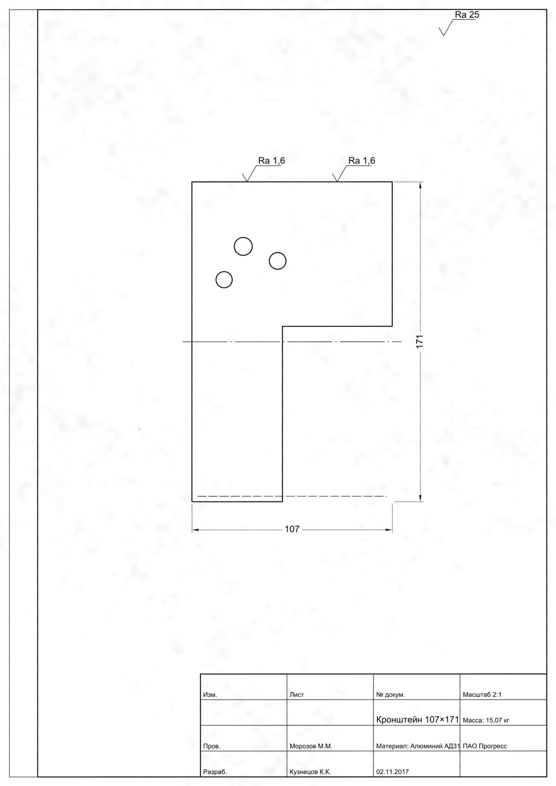

scan2dxf: скан чертежа → редактируемый DXF
Промежуточные результаты команды «Колупатели кальки» к чек-поинту 11.11.2026. Проектный практикум 3, кейс компании 44labs.
Задача
На вход — скан, фото или PDF машиностроительного чертежа. На выход — DXF (AutoCAD 2007+), который можно редактировать: отрезки, дуги и окружности на слоях по типу линии ГОСТ 2.303, размеры сущностями DIMENSION, штриховка, надписи, масштаб листа.
Что сделано
Задачи по этапам
Закрыто и открыто на 10.11 (задачи GitHub)
По блокам
| Блок | Состояние |
|---|---|
| Данные и проверка эталонов | готово |
| Метрики, сквозная оценка одной командой | готово |
| Предобработка: рамка, выравнивание, бинаризация | готово |
| Сегментация FPN, обучение, ONNX | готово |
| Векторизация: отрезки, дуги, окружности, типы линий, штриховка | готово |
| Чтение и запись DXF, конвертация в DWG | готово |
| Масштаб листа | готово |
| OCR, разбор допусков, сборка размеров | частично |
| Основная надпись, размещение текста в DXF | на ревью |
| Веб, пакетная обработка, Docker | готово |
| Офлайн-комплект, итоговая оценка | этап 4 |
Данные
666 реальных пар «растр + DXF» от заказчика, 25 деталей стороннего вуза, 31 скан и 78 фото распечаток, 150 листов своей синтетики. Разбиение train / val / test без утечек: одно изделие, документ и дубли — в одной части.
Пары по партиям
Сколько листов «растр + DXF» в каждой партии
Проверка эталонов
Каждый DXF сверен со своим растром после совмещения
Исключено 5: нет растра, чужой DXF, далёкий объект. Разбиение: train 470 / val 89 / test 127.
Как лист проходит пайплайн
Лист нашего генератора синтетики (неровная бумага, наклон, пятна) по этапам — переключайте этап ползунком или кнопками. Реальные чертежи заказчика здесь не публикуются; цифры качества — по реальным листам, в разделе «Метрики».

Метрики пайплайна
Весь пайплайн против эталонного DXF, допуск 1 мм, конфигурация по умолчанию. Метод выбирался на real-val, здесь — отложенный real-test.
Таблица
| Вход | Листов | Покрытие | F1 по концам | Тип линии | Критических на 100 | Формат |
|---|---|---|---|---|---|---|
| 56 | 0,95 | 0,35 | 93 % | 0,7 | 56 из 56 | |
| растр JPEG | 122 | 0,92 | 0,35 | 89 % | 1,4 | 120 из 121 |
| «состаренный» растр | 26 | 0,95 | 0,43 | 87 % | 1,1 | 26 из 26 |
| скан, мятый лист | 11 | 0,94 | 0,31 | 96 % | 0,0 | 11 из 11 |
| скан под углом | 20 | 0,87 | 0,30 | 69 % | 1,6 | 20 из 20 |
Как пришли к конфигурации по умолчанию
Доля линий с верным типом: обычный растр и сканы под углом. Нейросеть убрала путаницу текста и размерных с контуром, обучение с масштабом тайла вдвое подняло сканы под углом.
Покрытие длины на JPEG / PDF: скелет без нейросети 0,84 / 0,88, со всеми нейросетями 0,92 / 0,95. Базовое решение HoughLinesP — на 0,02–0,09 ниже скелета.
Сегментация
FPN + ResNet34 в ONNX, лист целиком тайлами, обучение на 469 реальных листах (Kaggle, T4). Метрика — F1 масок с допуском 2 px: линия толщиной 2 px, сдвиг на пиксель обнулил бы IoU.
F1 масок по классам
FPN 0.2.0, 89 листов val целиком
Штриховые нейросеть почти не находит (0,11) — их находит разбор рисунка разрывов вдоль линии: 7 из 7 на val.
Кривая обучения
Первое обучение U-Net (03.11), F1 по эпохам. Нажмите на класс, чтобы скрыть его
Обучение
Всего на GPU (Kaggle 2 × Tesla T4 и Colab T4) ушло больше 60 часов: обучение и подбор сегментации, обучение на растрах заказчика, проверки OCR и локальных VLM, замеры времени на GPU. Только итоговая серия сравнения — 19 прогонов по 20 эпох, 50–92 минуты каждый, около 20 часов; первое обучение U-Net в Colab — 30 эпох, около 2,5 часа. Лимит Kaggle — 30 ч GPU в неделю, поэтому прогоны шли парами. Ещё около 63 часов — 74 сквозных прогона оценки на CPU ноутбука (каждый — от десятков до 123 листов).
Прогоны: качество и время
17 прогонов, у которых записано время: F1 масок на val и минуты обучения. Наведите на столбец — точные значения
Выбран FPN с масштабом тайла 0,8–1,05 (отмечен): F1 0,767 и вдвое лучше на сканах под углом. U-Net++ в 1,6 раза дольше ради +0,002; DeepLabV3+ с растрами заказчика даёт F1 0,781, но больше критических подмен на всём пайплайне.
Текст и размеры
Выбор OCR
113 листов, 1582 размера и 197 полей штампа. Справа вверху — лучше и быстрее
Выбран RapidOCR с правилами для Ø и °: лучший по размерам, 6 с на лист на CPU, Apache-2.0.
Второй распознаватель для трудных надписей
100 вырезок размеров, точное совпадение
Qwen3-VL-4B не лучше Xiaomi-OCR-0 при модели в 5 раз больше — для допусков и посадок берём Xiaomi на этапе 3.
Где теряются размеры
14 листов val, 131 прямой размер: доля размеров, дошедших до шага
Главная потеря — пара стрелок у размерной линии: после исправления поиска стрелок у толстых линий (09.11) собрано вдвое больше, точность 75 → 86 %. Дальше — сборка без обязательной пары стрелок, диаметры и радиусы.
Время на лист
Медианы на 36 листах; CPU — ноутбук Ryzen 5 4500U (6 ядер, 8 ГБ), GPU — Tesla T4. Пунктир — ориентир ТЗ, 10 минут
A4–A2 укладываются с запасом, A1 — на границе, A0 — нет. 70–97 % времени больших листов — векторизация на CPU, её ускорение — в плане.
Задачи
План ведётся задачами GitHub по пяти этапам. Номер в скобках — пункт плана.
Заведено и закрыто
Нарастающим итогом с 14.10
| № | Задача | Этап | Статус |
|---|
Что пока не получилось
- Фото распечаток: рамка находится на 11 из 78 фото — нужна работа с изгибом и перспективой.
- Сканы под углом: тип линии верен у 69 % против 87–96 % на остальных входах.
- Размеры: собирается от 20 % до трети; радиусы и диаметры по окружности — в работе.
- Концы скруглений не всегда в точках касания; лист A0 обрабатывается дольше ориентира.
План до защиты (середина декабря)
- Текст и OCR: полнота размеров, поля основной надписи, размещение надписей в DXF, второй распознаватель для допусков.
- Привязка размеров к геометрии и решатель ограничений; знаки шероховатости и допусков, виды и сечения.
- Фото и сканы под углом, концы скруглений, штриховые нейросетью.
- Офлайн-комплект для CPU и GPU, итоговые метрики и экспертная оценка.